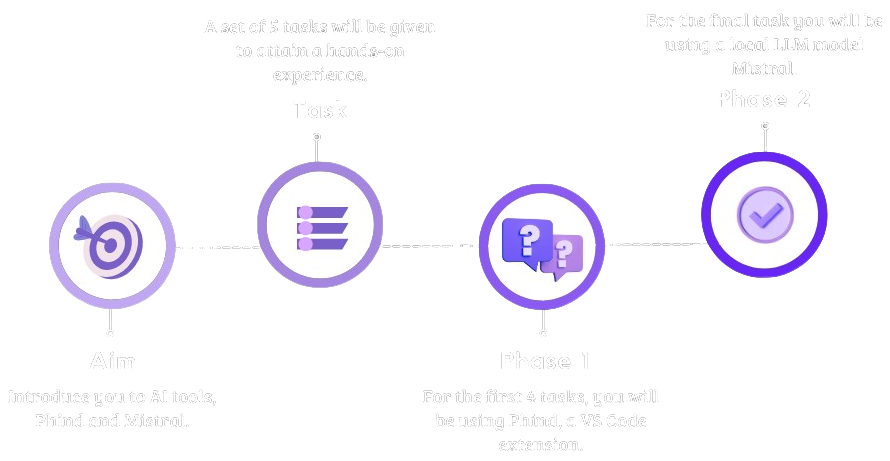

Overview
This workshop will introduce you to the next generation of AI code generation tools and the offline capabilities of Large Language Models (LLMs). We'll provide a practical demonstration of how to use AI tools like Phind to streamline your development process, significantly reducing the time spent on coding and improving code quality.
Additionally, we'll explore the security benefits of running LLMs offline with tools such as Ollama, ensuring that your data remains secure and private, even when working on sensitive projects.
Workshop Workflow
Buzzwords
- Fine Tuning
Mistral can be fine-tuned for specific applications, such as answering fact-based questions on complex documents with a focus on reducing hallucinations.
- Hallucination
The fine-tuning process aims to minimize hallucinations, which are incorrect or nonsensical outputs produced by the model.
- RAG
Mistral is part of the dRAGon model series, which are trained with RAG-instruct.
- Quantization
Quantization refers to a set of techniques that enable running models on resource-constrained platforms. Higher quantization 'bit counts' (4 bits or more) generally preserve more quality, whereas lower levels compress the model further, which can lead to a significant loss in quality.Choose a quantization level that aligns with your hardware's capabilities and satisfies the performance needs of your task. If you're unsure which option to select, consider experimenting with a few different ones and perform your own evaluation.
Quant method Bits Use case Q2_K 2 smallest, significant quality loss - not recommended for most purposes Q3_K_S 3 very small, high quality loss Q3_K_M 3 very small, high quality loss Q3_K_L 3 small, substantial quality loss Q4_0 4 legacy; small, very high quality loss- prefer using Q3_K_M Q4_K_S 4 small, greater quality loss Q4_K_M 4 medium, balanced quality - recommended Q5_0 5 legacy; medium, balanced quality - prefer using Q4_K_M Q5_K_S 5 large, low quality loss-recommended Q5_K_M 5 large, very low quality loss- recommended Q6_K 6 very large, extremely low quality loss Q8_0 8 very large, extremely low quality loss- not recommended - GGUF
Mistral uses the GGUF format for its model files, which are available in various quantization levels and sizes.
- Type of Models
Mistral is a generative text model that has been fine-tuned using various conversation datasets.
- Parameters
Mistral has a large number of parameters, which contributes to its ability to perform well on a wide range of NLP tasks.
Tools we curated...


Phind AI is an AI-powered search engine designed for developers to help with programming-related topics. It provides answers, code examples, and explanations to help users understand programming concepts more quickly.

Mistral AI can be used to generate text in a variety of formats, including articles, blog posts, and poems. Mistral is a large language model that has demonstrated strong performance in various natural language processing tasks.
Installing AI Tools: A Step-by-Step Guide
Mistral
To install Mistral to a local system using Ollama and the Continuum extension, follow these steps:
Step 1
Instructions to setup Ollama in ubuntu:
sudo apt-get install curlcurl https://ollama.ai/install.sh | shollama run mistral
Step 2
Add this extension to Visual Studio code after installing Ollama in system:
ext install Continue.continue
Phind
Launch Visual Studio Code Quick Open (Ctrl+P), paste the following command, and press enter.
ext install phind.phind